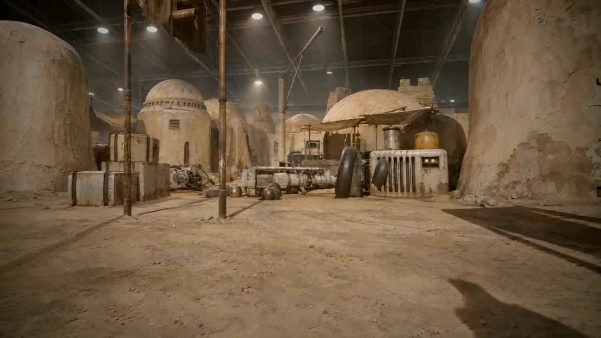
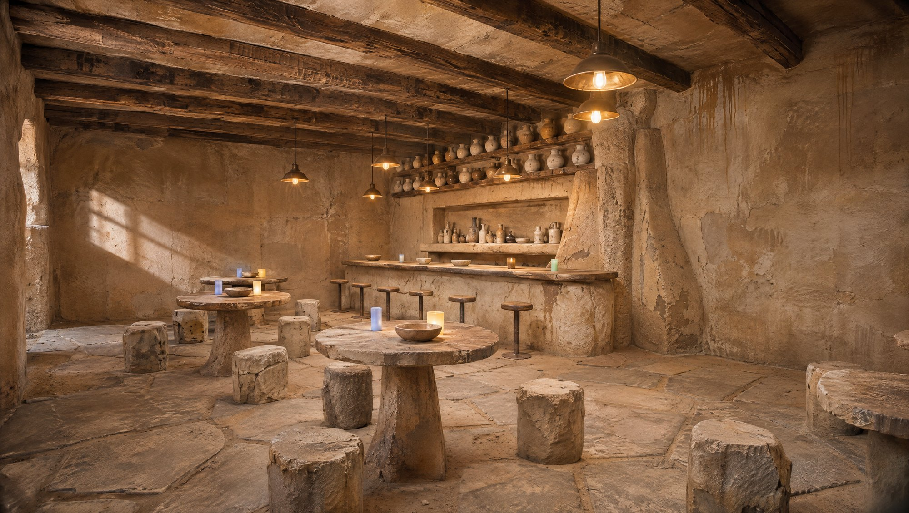

We hebben van de Blender shots een korte film gemaakt, onze mini pilot. De eerste aanpak, de video direct met AI bewerken, hield de blokkige Blender look. Daarom ben ik overgestapt naar stilstaande beelden: eerst elk beeld opnieuw laten schilderen door een beeldmodel en daarna het resultaat laten bewegen.
Ik koos zelf om geen eindshot te gebruiken, alleen een beginshot per clip. De vijf clips zijn gemonteerd met de Tatooine Theme van John Williams, rustig en licht mysterieus, met kleine onderschriften die zeggen waar je naar kijkt en een titelkaart aan het eind. De film is 17 seconden.
De film staat op YouTube als niet vermelde video en is het slot van aflevering 1.


Realisme komt uit het opnieuw schilderen van stilstaande beelden, niet uit het bewerken van de video. Ook ben ik gaan zien dat de clips nog 720p zijn en dat de camerabeweging in sommige shots subtiel is, dus dat is een verbeterpunt voor een volgende ronde.